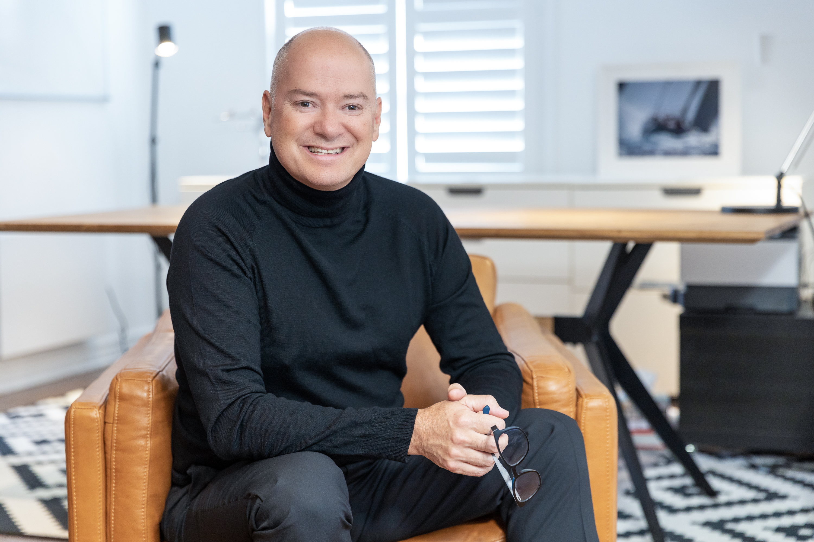

Plus de 35 ans à accompagner les familles des Basses-Laurentides. Une connaissance fine du marché local, une approche sans pression et des résultats qui parlent : près de 1700 propriétés vendues.

Installé à Sainte-Thérèse, Alain Brunelle travaille la Rive-Nord depuis plus de trois décennies. Cette longévité, c'est une lecture précise du marché secteur par secteur — et un réseau qui fait vendre plus vite, au bon prix.
Chaque secteur a son propre guide RE/MAX Crystal — marché, écoles, parcs, taxes. Explorez la ville qui vous intéresse.
Son port d'attache. Cœur historique et culturel des Basses-Laurentides.
Voir le guide →Le choix des familles. Marché actif, quartiers recherchés.
Voir le guide →Le pôle régional du nord-ouest, entre patrimoine et nature.
Voir le guide →Grands terrains et tranquillité, à deux pas de la ville.
Voir le guide →Bord de l'eau et accès au train de banlieue.
Voir le guide →Découvrez tout le territoire couvert par RE/MAX Crystal.
Toutes les villes →Une stratégie de mise en marché éprouvée et une négociation au service de votre prix.
Un guide local qui connaît les quartiers et défend vos intérêts.
"Sa connaissance du marché et son expertise en négociation nous ont permis d'obtenir 7-8 % de plus que ce à quoi je m'attendais. Chapeau ! Je le recommande à tous les vendeurs."
Normand Therrien — Blainville"Dès sa visite, la pression est retombée, nous nous sentions en confiance. Notre maison a été vendue à très bon prix, dans les délais voulus. Autant disponible que sympathique."
Simon & Laurianne"Un agent professionnel qui respecte les besoins de ses clients. Aucune pression, énormément d'écoute. La vente s'est faite en 3 semaines !"
Mme Forget — BlainvilleUn courtier immobilier résidentiel chez RE/MAX Crystal, avec plus de 35 ans d'expérience et près de 1700 propriétés vendues sur la Rive-Nord de Montréal.
Principalement Sainte-Thérèse, Blainville, Saint-Eustache, Ste-Anne-des-Plaines et Deux-Montagnes, dans les Basses-Laurentides.
Par téléphone au 514 972-4207, par courriel à alainbrunelle@alainbrunelle.com, ou à son bureau au 228 boul. du Curé-Labelle à Sainte-Thérèse.
Des propriétés résidentielles : maisons unifamiliales, plain-pied, maisons à étages et copropriétés, pour l'achat comme pour la vente.
Une question sur votre quartier, une évaluation, un projet — Alain vous répond rapidement.